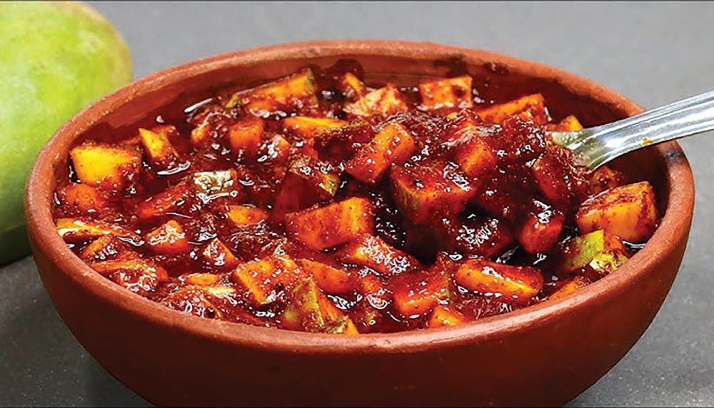
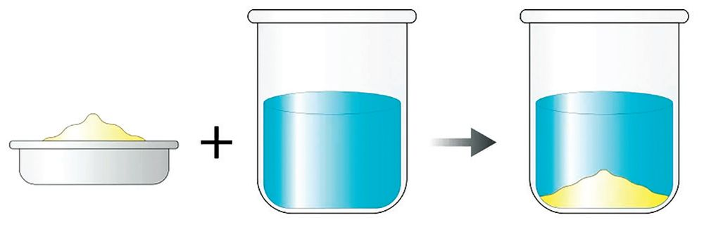
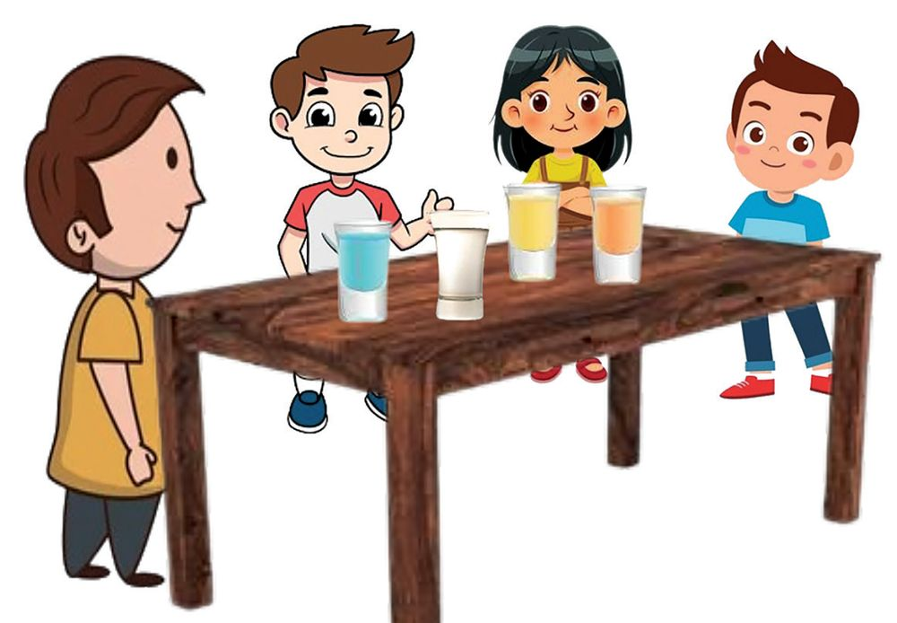
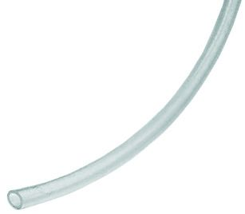
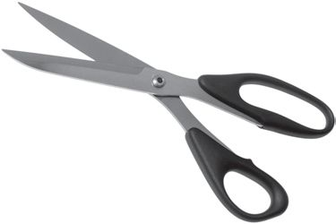
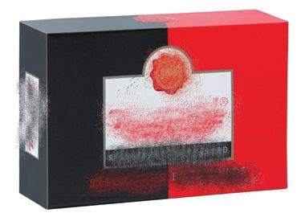
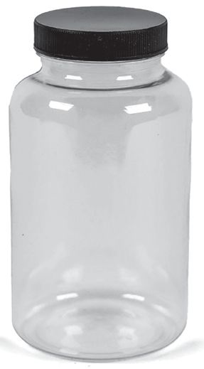

Association of
Substances
It is this
speciality of this
snack that
later gave its
name, my dear!
Dad... why are so
many items mixed
in this snack?
I don't like some of
them at all.
You might have guessed what the boy is talking about. What are the different
items in this snack? Examine the snack and find out the items in it. Discuss in
groups and make a list.
Groundnut
u
u
u
Fried gram
u
u
We use a variety of items like this in our daily life. You already know many
items that are used for preparing food. Haven’t you noticed that new
substances are produced by mixing different items in the fields of agriculture,
health,
construction
etc.?
Observe the
picture.
u
You are familiar with
these substances, aren’t
you?
Concrete
78
Compost
Page 79
Figure fig_ch05_p079_01 (Page 79)

Figure fig_ch05_p079_02 (Page 79)
Class VI
Which are the substances used to make concrete?
u
Cement
u
u
Which are the household bio-wastes used to make compost?
What are the peculiarities of concrete, compost and mixture? Aren’t they
made by mixing more than one substance? Discuss.
Pictures of two common home made dishes are given below. Observe them
Salad
Mango Pickle
Which are the ingredients usually used in salad and mango pickle?
Aren’t the ingredients and their quantity important in making the food
delicious?
Let’s Prepare a Salad
Shall we prepare a delicious salad in the class? What are the ingredients
required to prepare a salad? Discuss in groups and prepare a list.
Materials required:
u
u
Onion
u
Tomato
u
u
Salt
u
Now let’s start making the salad.
Each group can take the necessary ingredients, make the salad and share it in
the class. Each group should write the recipe of the salad that they have
prepared. Present it in the class.
79
Page 80

Figure fig_ch05_p080_01 (Page 80)
Basic Science
You have prepared the salad by mixing different substances in different ways.
The food we eat daily is made up of many such substances. List more examples.
Discuss on how to prepare a mango pickle. Write the recipe and present it in
the class.
You have understood that concrete, compost, mixture, salad and mango pickle
have more than one component. All these are mixtures. Similarly, there are
many substances around us that are composed of more than one component.
Find them and identify their components.
Mixtures
A mixture is a combination of more than one substance.
Let’s Make Mixtures
Take the following materials from the Science Kit. How many mixtures can be
made from them?
Materials required: Water, salt, sugar, chalk powder, lemon, blue vitriol,
potassium permanganate, iron powder, rava, green gram, bengal gram,
paddy, transparent vessels,
glass tumblers, small vessels
and spoons
Prepare different mixtures and
display them in suitable
containers.
Name
them
appropriately. Tabulate the name of the mixtures made by each group and
their components.
Mixture prepared
Components
Lime juice
80
Page 81

Figure fig_ch05_p081_01 (Page 81)
Class VI
u
Do all the ingredients in the mixtures you have prepared belong to the
same state of matter?
u
Which are the mixtures in which a solid is dissolved in a liquid?
u
Are there any mixtures of two solids?
u
Which are the mixtures with more than one solid dissolved in a liquid?
Discuss your findings in the class and note them in your Science Diary.
Mixtures with solid dissolved in liquid
u
Salt water
u
Mixtures of solids
u
Rava mixed with salt
u
Mixtures with more
than one solid dissolved
in liquid
u
Potassium
permanganate and
salt dissolved in
water
u
Now let’s find out more about mixtures.
u
Mixtures in which all components are visible.
u
Mixtures in which all components are not visible.
Record the findings in the Science Diary and present them.
Mixtures in which all components are visible.
u
Chalk powder in water
u
Mixtures in which all components are not visible.
u
You have prepared many mixtures, haven't you? In which of these mixtures
is one substance dissolved in another one? You have learnt that such mixtures
are solutions.
You know that solutions are formed by dissolving a solute in a solvent. Find
more examples for solutions. Tabulate them and present in the class. Discuss
their components.
Solid-liquid solution
u
Potassium
permanganate solution
u
Liquid-liquid
solution
u
Vinegar
Gas-liquid
solution
u
u
Soda
water
Gas-gas solution
u
Air
u
u
u
u
u
Wouldn't you like to know more about different types of solutions?
For Further Reading
Diversity in Solutions
There are solutions formed by dissolving a gas in a solid and a
solid in another solid. The solution of palladium and hydrogen
gas is a solid-gas solution. Alloys such as gold, brass, and
bronze used for making jewellery are solutions formed by
dissolving solid in another solid. Haven’t you heard of 916
gold? When 1000 grams of gold is made by mixing 916 grams
of gold and 84 grams of other metals (silver and copper), it is
called 916 gold. This is also a solid in solid solution.
We have prepared different types of mixtures. Take equal quantities of water
in glasses of same size. Prepare the following and observe.
Mixture 1.
Water with sugar dissolved in it.
Mixture 2.
Salt solution
Mixture 3.
Water mixed with chalk powder
82
Page 83
Class VI
Examine the mixtures you have prepared and discuss the following.
u
Are these mixtures alike?
u
What are the similarities between sugar solution and salt solution?
u
What is the difference between water mixed with chalk powder and salt
solution?
Let’s do one more experiment. Take the sugar solution you have prepared
earlier. Take the same amount of water and sugar in a similar glass and keep
it unstirred. Using a straw, carefully taste from different parts of the water
with dissolved sugar and the unstirred mixture of sugar and water. Record
the differences in taste in the table below.
Mixture
Taste in different parts
Top
Middle
Bottom
Water with dissolved
sugar
Water with unstirred
sugar
u
u
u
Is the sweetness the same everywhere in the well-stirred sugar solution?
What about the taste of the solution taken from different parts of the
unstirred sugar solution?
Aren’t the components the same in both? Yet what could be the reason
for the difference in taste?
Analyse the table and record your findings in the Science Diary. The solution
with dissolved sugar is a homogeneous mixture and the water with undissolved
sugar is a heterogeneous mixture.
Homogeneous Mixtures and Heterogeneous Mixtures
The mixture that shows the same properties throughout all its parts is called a
homogeneous mixture. The mixture that shows different properties in different
parts is called Heterogeneous mixture.
83
Page 84
Figure fig_ch05_p084_01 (Page 84)
Basic Science
Examine the following issues based on the concepts you have understood.
u
u
u
Are the mixtures with dissolved salt and that with undissolved salt the
same? How are they different?
Is the mixture of chalk powder and water, homogeneous or
heterogeneous? Why?
Are compost, concrete mix and the edible mixture, homogenous or
heterogeneous? Why? Discuss. Record them in your Science Diary.
Classify the mixtures you have prepared so far into homogeneous mixtures
and heterogeneous mixtures and write them in the table below.
Homogeneous mixtures
Heterogeneous mixtures
Expand the table by including other mixtures you are familiar with.
All solutions are mixtures,
but not all mixtures are solutions.
What is your reaction to the child’s statement? Record your response and
explanations in your Science Diary. Examine more solutions and confirm
whether your findings are correct.
Mixtures in Daily Life
Check the menu of noon meal in your school. Aren’t variety of food items
included in it? Discuss how much we are using various mixtures in our food
for a healthy life.
84
Page 85
Class VI
You have learnt that the air we breathe is a mixture. What are the components
in it? Analyse the table.
Gas
Quantity
Nitrogen
78%
Carbon dioxide
0.04%
Oxygen
21%
Others
0.96%
What are the components in air? Compare their quantities. You have
understood that air is a mixture. Shouldn’t these components in air be
maintained in the same quantity? Which components of air are being used in
activities such as respiration and photosynthesis? What will happen if the
level of carbon dioxide increases and that of oxygen decreases in air? Discuss.
The smoke produced by burning plastic contains various toxic substances. If
these substances get mixed with air, it will affect the equilibrium of air and
can have adverse effects on the health of living beings including humans.
Don’t you now understand the need for protecting the equilibrium of elements
in the air from human interferences?
Hide and Seek of a Solute
Sugar solution has both water and sugar. But we cannot see the sugar once it
is dissolved in water. Why is it so? Where did the sugar disappear? What
happened to sugar? Let’s find out.
Materials required: Large plastic jar (1 litre), gravel (500 g). green gram 100 g,
Rava 100 g.
Activity: Put the gravel in a plastic jar and shake it well. Using a marker pen,
mark the level of gravel on the outer surface of the jar . Add some green gram
to this and stir the jar. Does the level of gravel rise now? Write the measurement
in the table. Then put some Rava in the plastic jar and shake it well. Does the
height of the gravel change after this? Record the observation in the table
below.
85
Page 86
Basic Science
Height of gravel
in the jar
Activity
After shaking and pressing the gravel in the jar
After adding the green gram in the jar and shaking it
After adding the rava in the jar and shaking it well
Analyse the table below.
u
Does the level of the gravel inside the jar change after adding green gram
and rava and shaking them down? Why?
u
Where have the green grams settled?
u
Where have the rava grains settled?
u
When rava and green gram are added to the gravel in the jar and shaken,
was there any difference in the total space required for all the three?
How can green gram stay along with gravel and rava grains settle in between
the two? Discuss and record the inference in the Science Diary.
In this experiment, we can see two substances occupying the space between
the gravel pieces
Does the same thing happen when substances dissolve in water?
By tasting the sugar solution obtained by dissolving sugar in water can we
understand the presence of sugar in it? Based on the above experiment, explain
where the sugar granules in the solution got hidden. Record your inference in
your Science Diary.
Building Blocks of Matter
We cannot directly see the sugar particles in the sugar solution. But the
sweetness of sugar is present everywhere in the solution. What is its secret ?
Let’s see how sugar is hiding in water as very small granules. What are the
properties of sugar?
Colour .............................
Taste .............................
State .............................
Crush a little sugar. Take a small granule of it and examine. Does this granule
possess all the above features?
86
Page 87
Figure fig_ch05_p087_01 (Page 87)
Class VI
Let’s see how sugar grains can be made even smaller, and still retain all the
properties of sugar.
Materials required: Sugar, small hammer, microscope, slide, cover slip,
brush.
Activity
Take some sugar in a paper, keep it on a firm surface and crush it with a
hammer. Take the smallest granule from it and taste. How does it taste?
Pick one of these small granules of sugar with a brush and place it on a slide
and observe under a microscope. Doesn’t the small granule appear big? Didn’t
you realize that it could be made even smaller again? Imagine the smallest
sugar granule that cannot be seen
Sugar
with an ordinary microscope, yet
Powdered sugar granule.
having all the properties of sugar.
A powdered sugar granule,
What would be the peculiarity of
powdered again.
such a particle?
A very small sugar powder
which can be seen only
through a microscope
That particle shows all the
properties of sugar.
A very small sugar powder
Such
small
particles
are
molecules. All substances are
made up of their molecules. A
molecule will have all the
properties of that substance.
which cannot be seen even
through a microscope
Smallest particle of sugar
having all its
properties
Look at the illustration.
Now you have understood what
the molecule of a substance is
and how small it is.
Molecule
Molecule
Molecule is the smallest particle of a substance having all its properties. All
substances are made up of molecules.
Haven’t you understood the secret of sugar retaining its sweetness equally
every where in the solution though it is invisible in sugar solutions? The sugar
molecules in sugar solutions spread throughout the water. Now, you have
understood that this sugar solution is a homogeneous mixture.
For Further Reading
Kanada
Kanada was a philosopher and scholar of ancient India. He is believed to have
lived in 6th or 2nd century BC. Kanada believed that all matter is composed of
indivisible microscopic particles called Paramanu.
Molecules Near and Far
You know that matter has solid, liquid and gaseous states. How can substances
exist in these states? Let’s think in terms of molecules. Check the illustration
given below to know how the molecules are arranged in solids, liquids and
gases around us. Find out how the molecules exist in each state.
Solid
Liquid
Gas
u
In which state of matter are the molecules the closest?
u
In which state of matter are the molecules the farthest?
u
Why do solids have a definite shape while gases and liquids don't have?
Haven’t you understood how the molecules of a matter exist in all the three
states? Why are liquids able to flow? How can gases spread fast? Solids cannot
flow or spread. Why? Explain these in terms of arrangement of molecules.
Record your explanation in the Science Diary and present.
Atoms are smaller particles than molecules. Molecules are made up of
atoms. A water molecule is formed by combining two hydrogen atoms and
one oxygen atom. A sugar molecule consists of 12 carbon atoms, 22 hydrogen
atoms and 11 oxygen atoms.
A mixture is a combination of more than one substance. So wouldn’t there be
more than one type of molecule in a mixture? Note the illustration showing
the molecules in different substances.
A
B
C
D
Haven’t you observed the illustrations? How many types of molecules are
there in Substance A? What about B? Which substances have different types
of molecules?
Which substances have the same type of molecules? Observe the picture and
write.
You have already understood that mixtures are made up of different types of
substances. Which are the mixtures in the picture? Discuss.
Some substances are made up of same type of molecules. These are pure
substances. Some are composed of different types of molecules. Didn’t you
understand these from the picture? There are substances around us, containing
the same type of molecules and those containing different types of molecules.
From the above illustrations of substances A, B, C and D, identify pure
substances and mixtures.
Pure Substances
Pure substances are substances made up of same type of molecules. Mixtures
will have different molecules in them.
Are mixtures pure substances? Why? Discuss.
Water without any impurities is a pure substance. Why? Record your inference
in your Science Diary.
Which are the other pure substances you know? Look at the illustration below.
We are pure
substances.
Iron
I am
also a pure
substance.
Copper
Me too
Carbon
Me too
We are also
pure
substances
Carbon dioxide
Water
Hydrogen
Oxygen
Classify the following substances as pure substances and mixtures and
complete the table appropiately.
Substance
Molecules involved
Porridge
Pencil graphite
Sugar
Soda water
Buttermilk
Pure water
Potassium permanganate
Water, salt and other substances
Graphite
Sugar
Carbon dioxide, water
Water, salt and other substances
Water
Potassium permanganate
Is Pure Coconut Oil a Pure Substance?
You might have seen advertisements of pure coconut oil, pure milk, pure
ghee etc. But the word “pure” used in science does not mean the same as in
advertisements. In the market, pure coconut oil means that it does not contain
any other oils or components. Scientifically, coconut oil is a homogeneous
mixture of molecules of many components.
You have understood the difference between pure substances and mixtures.
Find more examples for each category and complete the table.
Substances
Pure substances
Mixtures
u
u
u
Homogeneous
mixture
Heterogeneous
mixture
u
u
u
u
u
u
Separating Mixtures
Mixtures are the combination of more than one substance. Notice the following
mixtures. How can we separate the components from these mixtures? Discuss.
Which are the components of these two mixtures?
Examine the following questions.
u
Do rice and stone have same colour? Do they have same shape and size?
u
The components of which of these mixtures can be seperated by hand?
u
u
u
If the stones have the same size and colour that of rice, would it be possible
to seperate them by hand?
Can iron dust be seperate from sand?
Can iron powder be separated from sand by making use of any other
property of iron powder?
Which properties of the components do we make use of in these two methods
of seperation? Record your findings in the Science Diary.
Find out more instances of separating components in the same way and list
them in the table below.
You have learned that the properties of the components are made use of in the
process of their separation. Discuss the different types of separation used in
the following situations. Examine the properties of the components utilized
in each situation.
u
u
u
u
How do we separate tea dust from tea?
How are small stones removed from rice while washing it before
cooking?
Which are the ways by which muddy water can be purified?
How are gravel and other waste materials separated from the sand used
for construction works?
There are even more methods of separation. Observe the pictures.
Separating salt from sea water collected
in the salt - field
Separating iron powder from sand
Separating the chaff from paddy
Separating butter from curd
Analyse each image. Using the following clues, find the methods for separating
the components. Tabulate them.
Salt is separated from seawater
collected in salt fileds.
Butter is separated from curd.
Iron powder is separated from sand.
Paddy and chaff are separated.
u
u
u
u
From the table, identify the context that utilises the change of state of
matter for the separation of dissolved component.
How is the process of separating butter from curd different from others?
Which situation makes use of the magnetic property of the component
for separation?
Which property is used to separate chaff from paddy?
You have understood that the method of separation also varies according to
the nature of the components. Explore and find out more methods of separation
we use in our daily life.
For Further Reading
Process of Elimination of Impurities within the Body
Kidneys are filters that seperate waste from
blood. Our body has about 5 litres of blood.
This blood is subjected to constant filtration by
our kidneys. This is a natural
process of separation in the
body. If kidneys fail, this
filtering process gets slowed
down and the patient becomes critically ill. Such patients are
assisted through an artificial filtering process called dialysis.
94
Page 95
Class VI
Haven’t you understood that we use pure substances and mixtures in many
situations in our day to day life? Why should we understand the properties
and uses of mixtures and pure substances? Isn’t it useful for us to lead our
daily life in a better way? Besides we should be able to make new substances
when needed and also make use of the different methods of separation.
You will learn more about pure substances and mixtures in higher classes.
Let’s Assess
1.
A drink is prepared by mixing, salt and sugar to soda water.
a)
What are the components of this mixture?
b)
Is this drink a homogeneous or heterogeneous mixture?
2.
One spoon of salt is added to a glass of water. There is undissolved salt
in the glass. What should be done to make it a homogenous mixture?
3.
Examine the following statements about iron, brass, gold ornament,
bronze, carbon dioxide and aluminium. Tick () the correct ones among
these.
a)
All these are not pure substances.
b)
Brass, Iron and bronze are metallic mixtures.
c)
Gold ornament is a mixture.
d)
Carbon dioxide and aluminium are pure substances.
Extended Activities
1.
Let's make an overflow jar.
Pour some coconut oil in a glass tumbler filled with water and observe.
How can we separate a mixture of oil and water?
Shall we make a device for this! Draw an outline for this purpose and
discuss your idea in the group. What materials can be used for this? List
them out.
95
Page 96

Figure fig_ch05_p096_01 (Page 96)

Figure fig_ch05_p096_02 (Page 96)

Figure fig_ch05_p096_03 (Page 96)

Figure fig_ch05_p096_04 (Page 96)
Basic Science
Look at the given materials.
Mason pipe
Scissors
Transparent plastic container
Glue
How can these be used for making this device? Think about it in groups and find a
suitable method. Present it in class and modify. Make the device. Write a note on
this method of preparation in your Science Diary. Using this device, separate the oil
from water.
2.
Prepare a note on natural drinks consumed during summer, their method of
preparation and present it in the class.